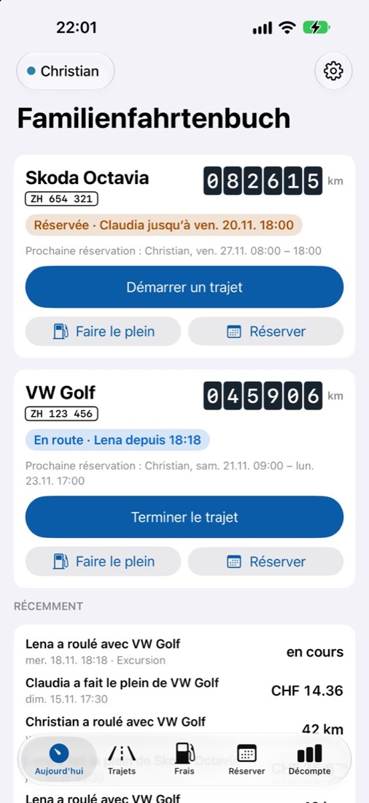
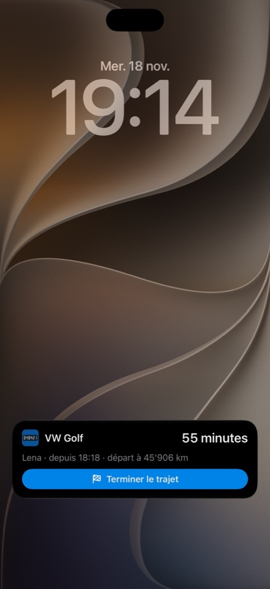
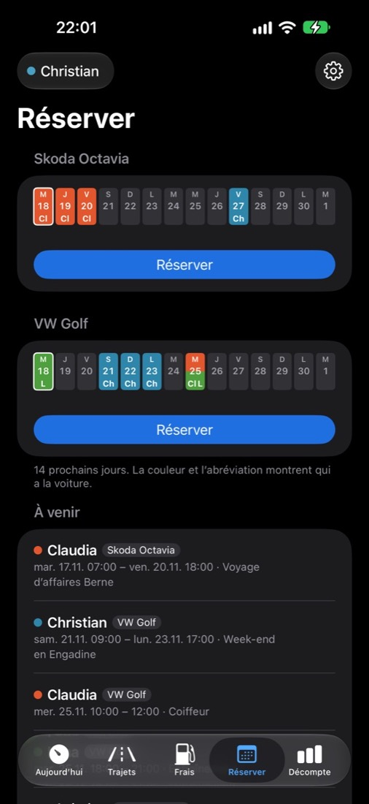
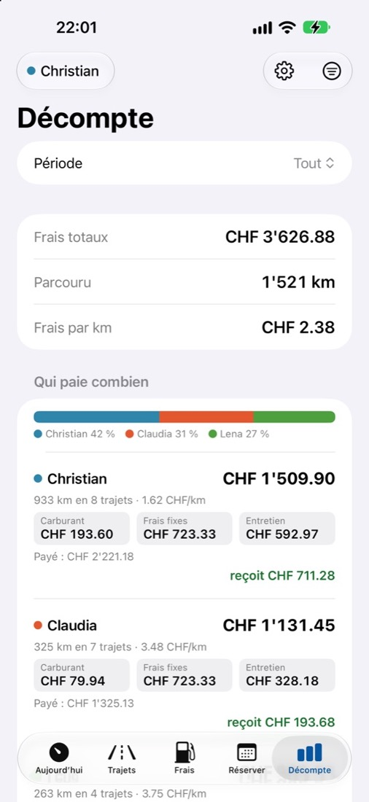
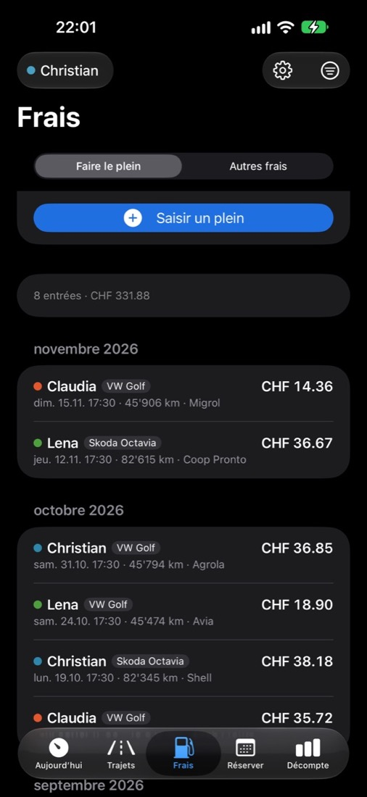
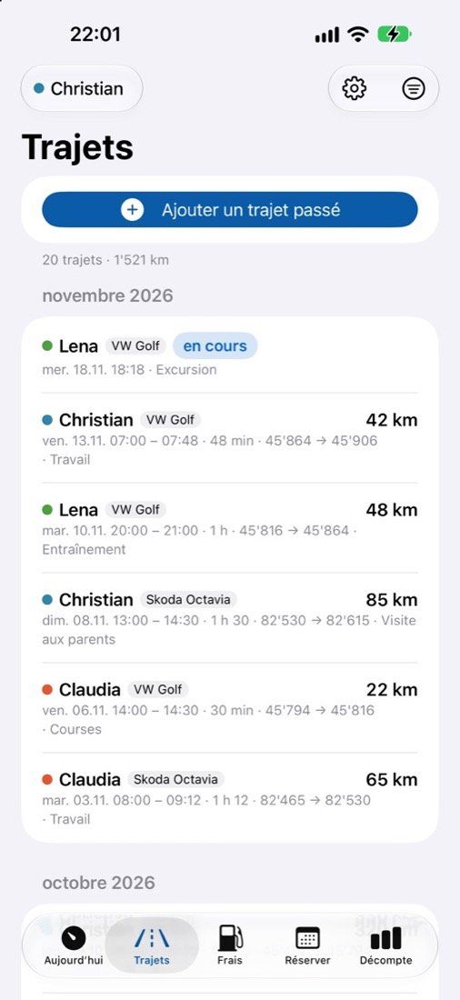
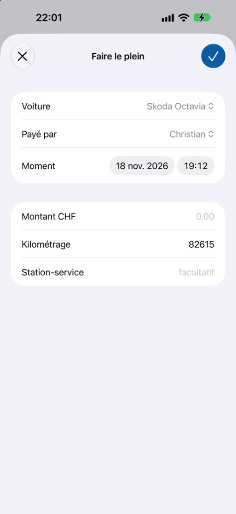

Trajets, pleins ou recharges, frais et réservations pour les voitures de la famille, au même endroit : essence, diesel, électrique ou hybride rechargeable. L’app répartit les frais selon des clés réglables et montre qui doit combien à qui. Chaque membre de la famille saisit sur son propre iPhone, la synchronisation passe par iCloud.







Images avec données d’exemple.
Ce que fait l’app
- Trajets – Démarrer et terminer un trajet avec le kilométrage, ou l’ajouter plus tard. Pendant le trajet, l’écran verrouillé montre la durée avec le bouton « Terminer le trajet ».
- Plein et recharge – Saisir le montant et le kilométrage, aussi pour les voitures électriques et les hybrides rechargeables.
- Autres frais – Assurance, service, réparations et tout ce qui s’ajoute.
- Réserver – Réserver la voiture pour une période et voir l’occupation des 14 prochains jours d’un coup d’œil. Une notification arrive quand quelqu’un réserve, déplace ou supprime.
- Décompte équitable – Répartir les frais par voiture et par type : selon les kilomètres, à parts égales ou avec des parts fixes. L’app montre qui doit combien à qui et enregistre la compensation. Export en tableau (CSV).
- Pour toute la famille – Partagé via iCloud, chacun avec son propre iPhone, avec le droit de modifier ou seulement de consulter. L’app tient correctement compte de qui arrive ou s’en va et des voitures vendues.
- Siri et CarPlay – « Démarrer un trajet avec Fahrtenbuch » fonctionne aussi en voiture et avec l’iPhone verrouillé.
- Quatre langues – Français, allemand, italien et romanche.
Volontairement simple
Familienfahrtenbuch est fait pour les familles qui partagent leurs voitures, pas pour les entreprises ou les flottes. Il ne contient donc pas toutes les fonctions imaginables, seulement ce qui est vraiment utile : qui a roulé quand, ce qui a été payé, qui a réservé la voiture et comment les frais sont répartis équitablement à la fin.
Moins, mais bien fait. Sans compte, sans publicité, sans serveur propre. Les données restent dans la famille.
Questions, erreurs ou souhaits ?
support@familienfahrtenbuch.chQuestions fréquentes
L’app est-elle traduite ?
Oui, depuis la version 1.4, l’app existe en français, en italien et en romanche. Le français et l’italien ont été traduits avec l’intelligence artificielle (IA), le romanche avec ALAS, le traducteur de la Lia Rumantscha ; nous vous remercions de nous signaler les erreurs. L’app suit la langue de l’iPhone. Une autre langue juste pour cette app se choisit dans l’app sous Réglages → « Langue », puis il faut fermer complètement l’app et la rouvrir.
Comment inviter quelqu’un dans la famille ?
Dans l’app, sous Réglages → « Inviter la famille … », envoyer un lien, par exemple par Messages.
La personne invitée installe l’app, l’ouvre une fois, puis touche le lien. Si rien ne se passe, toucher simplement le lien encore une fois.
De quoi a-t-on besoin ?
D’un iPhone avec iOS 17 ou plus récent. Pour partager avec la famille, tout le monde doit être connecté à iCloud avec son identifiant Apple. Les données de la famille se trouvent dans l’iCloud de la personne qui a invité et comptent dans son stockage iCloud (généralement très peu).
Les modifications n’arrivent pas sur l’autre iPhone
La synchronisation via iCloud peut prendre quelques minutes. En arrière-plan, elle ne fonctionne que si l’actualisation en arrière-plan est activée pour l’app et que le mode économie d’énergie est désactivé. Sinon, les modifications n’arrivent qu’à l’ouverture de l’app. Merci de vérifier :
- Réglages iOS → Général → Actualisation en arrière-plan : activée, aussi pour Familienfahrtenbuch.
- Mode économie d’énergie désactivé. Ne pas fermer l’app dans le sélecteur d’apps.
- Les deux iPhone sont connectés à Internet et à iCloud.
- Dans l’app, sous Réglages, figurent « Dernier chargement » et « Dernier envoi ». Si un message « Synchronisation iCloud : … » s’affiche, merci de nous l’envoyer.
- Fermer complètement l’app une fois et la rouvrir.
Que montre l’affichage en direct pendant un trajet ?
Tant que ton trajet est en cours, l’écran verrouillé et la Dynamic Island montrent la voiture, la durée et le bouton « Terminer le trajet ». Le bouton ouvre directement le formulaire pour le kilométrage. Si un trajet dure depuis 12 heures, l’app rappelle de le terminer.
La première fois, iOS demande si l’app peut afficher des activités en direct. Cela se règle dans les réglages iOS sous Familienfahrtenbuch → Activités en direct. iOS n’affiche pas une activité en direct plus de 8 heures.
Comment fonctionne l’app avec Siri ?
Dis par exemple :
- « Démarrer un trajet avec Fahrtenbuch »
- « Démarrer un trajet avec VW Golf dans Fahrtenbuch » (avec le nom de ta voiture)
- « Terminer le trajet avec Fahrtenbuch »
- « Ajouter un plein avec Fahrtenbuch » ou « Ajouter une recharge avec Fahrtenbuch »
Siri demande ce qui manque : la voiture s’il y en a plusieurs, à la fin le kilométrage, pour un plein ou une recharge le montant et le kilométrage. C’est attribué à la personne choisie comme « moi » en haut à gauche dans l’app. Démarrer et terminer un trajet fonctionnent aussi avec l’iPhone verrouillé et en voiture avec CarPlay, le plein et la recharge seulement après déverrouillage.
Les mêmes commandes figurent dans l’app Raccourcis et peuvent être placées sur le bouton Action. Dans l’app, sous Réglages → « Siri et Raccourcis », toutes les phrases sont listées.
Je ne reçois pas de notifications pour les réservations
Chaque iPhone crée la notification lui-même dès que la synchronisation a apporté la modification. L’interrupteur « Notifications de réservations » dans les réglages ne vaut donc que pour son propre iPhone. De plus, l’app doit avoir le droit d’envoyer des notifications dans les réglages iOS.
Important : sans actualisation en arrière-plan ou en mode économie d’énergie, la notification n’arrive qu’à l’ouverture de l’app. Même sinon, iOS décide lui-même quand il réveille l’app en arrière-plan ; une notification peut donc arriver quelques minutes plus tard.
Quelqu’un ne roule plus avec nous, une voiture a été vendue
Pour les personnes, dans les réglages « Faire partir … », pour les voitures « Marquer comme vendue … ». Les deux restent avec leurs entrées dans le décompte pour que la compensation soit juste, mais n’apparaissent plus dans les listes de choix.
Comment quitter une famille ou supprimer toutes les données ?
Quitter une famille : Réglages → « Voir les participants ». Supprimer toutes les données de la famille : Réglages → « Réinitialiser ». Cela supprime aussi les données chez toutes les personnes invitées.
Cela fonctionne-t-il avec une voiture électrique ou une hybride rechargeable ?
Oui. Dans les réglages de la voiture, choisir la motorisation « Électrique ». On « recharge » alors au lieu de « faire le plein ». L’électricité est répartie dans le décompte comme le carburant, selon les kilomètres parcourus. Avec Siri : « Ajouter une recharge avec Fahrtenbuch ».
Pour une hybride rechargeable, choisir « Hybride rechargeable » (dès la version 1.4). Le bouton s’appelle alors « Plein/Recharge », et dans le formulaire tu choisis si tu as fait le plein ou rechargé. Siri le demande.
Combien coûte l’app ?
Rien. Pas de publicité, pas d’abonnement.
Que deviennent mes données ?
L’app ne collecte aucune donnée. Ce que vous saisissez se trouve sur votre iPhone et dans iCloud, visible uniquement pour votre famille. Nous n’y avons pas accès. Détails dans la déclaration de protection des données.